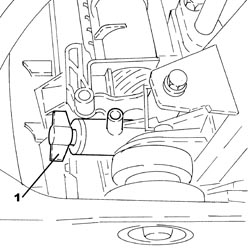
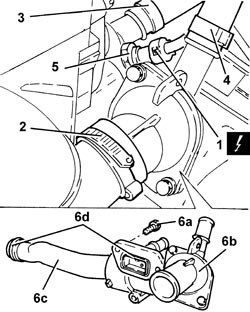
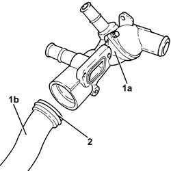
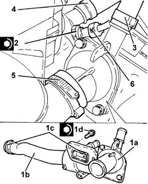

1088C30 THERMOSTAT UNIT - R+R
- Path
- Procedures > 10 ENGINE > 1088 ENGINE COOLING > 1088C WATER PUMP AND THERMOSTAT > 1088C30 THERMOSTAT UNIT - R+R
- Kind
- repair procedure (removal / refitting; the operation number is the code)
- Applies to
- engines: 2.2 JTS; all production periods
- Interactive page
- https://sloeber94.github.io/elrnDB-aBrrSpdr/en/#/946002007
Applies to: engines: 2.2 JTS; all production periods
 Removing
Removing
 Refitting
Refitting- Position the vehicle on a lift.
Op. 5530B52 BATTERY SUPPORT/DRIP TRAY - R.R
1. Undo the radiator coolant drain plug.

Applies to: engines: 2.2 JTS; all production periods
1. Disconnect the electrical connection from the engine coolant temperature sensor.
Description | Connector | |
|---|---|---|
1 | Engine coolant temperature sensor/sender unit |
2. Loosen the collar and disconnect the upper coolant input sleeve to the radiator, thermostat side.
3. Loosen the band and disconnect the coolant return pipe from the climate control system heater, thermostat side.
4. Loosen the band and disconnect the coolant supply pipe to the heat exchanger, thermostat side.
5. Undo the engine coolant temperature sensor and remove it.
6. Undo the bolts (6a) and remove the thermostat (6b) complete with water pump rigid fluid inlet pipe (6c) and O-rings (6d).

Applies to: engines: 2.2 JTS; all production periods
1. At the bench, separate the thermostat (1a) from the water pump rigid fluid inlet pipe (1b).
2. Remove the seal.

Applies to: engines: 2.2 JTS; all production periods
Refitting
Removing- Assemble the rigid coolant inlet pipe and water pump complete with a new seal.
1. Place the thermostat (1a) complete with water pump rigid coolant inlet pipe (1b) and new O-rings (1c) back in its housing and secure it tightening the bolts (1d) to the recommended torque.
Component | Fastening | dia | Value (daNm) | Validity |
|---|---|---|---|---|
Thermostat unit | Bolt | M6 | (engine block side) 0.6 - 1.0 | 1.9 JTS 2.2 JTS |
2. Place the engine coolant temperature sensor in its housing and tighten it to the recommended torque.
Component | Fastening | dia | Value (daNm) | Validity |
|---|---|---|---|---|
Engine coolant temperature sensor | - | M12 | (thermostat unit side) 2.2 | 1.9 JTS 2.2 JTS 3.2 JTS |
3. Connect the coolant supply pipe to the heat exchanger, thermostat side, and tighten the band.
4. Connect the coolant return pipe from the climate control system heater, thermostat side, and tighten the band.
5. Connect the upper coolant input sleeve to the radiator, thermostat side, and tighten the band.
6. Connect the electrical connection to the engine coolant temperature sensor.

Applies to: engines: 2.2 JTS; all production periods
- Tighten the coolant drain plug to the radiator.
Op. 5530B52 BATTERY SUPPORT/DRIP TRAY - R.R
Op. 0010T20 ENGINE COOLANT - CHANGE
- Remove the vehicle from the lift.
Topics linked from this page (4)
- 0010T20 ENGINE COOLANT - CHANGE
- 5530B10 BATTERY - R+R
- 5530B52 BATTERY SUPPORT/DRIP TRAY - R.R
- K036 ENGINE COOLANT TEMPERATURE SENSOR/SENDER UNIT